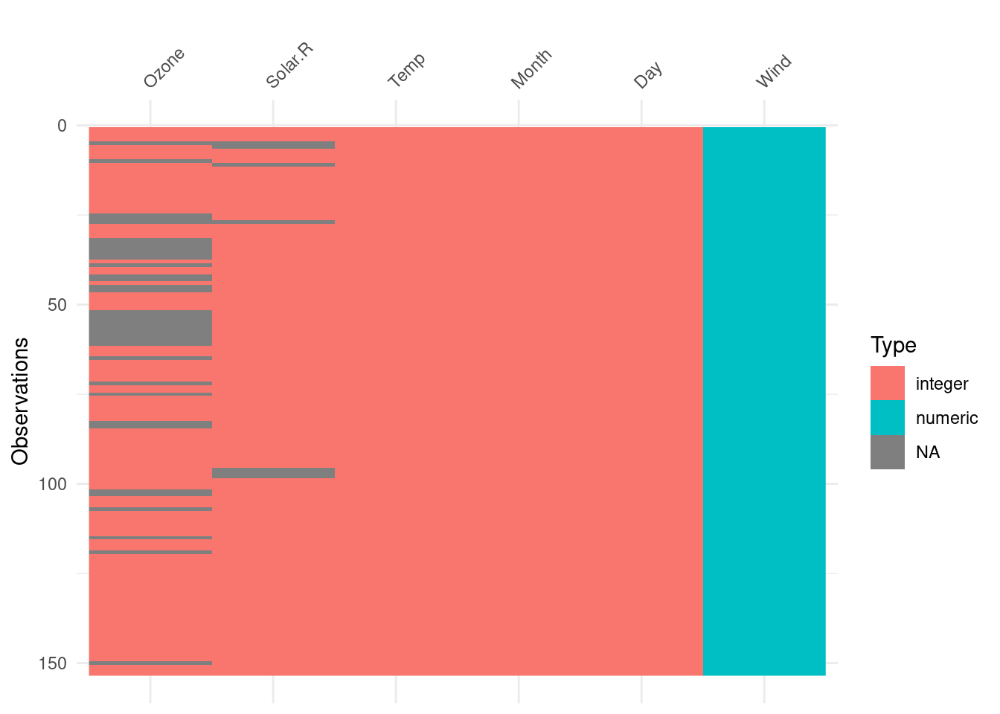

visdat is a package which allows you to get a quick visual glance at the variable classes of a dataframe to identify problems or unexpected features.
Are you just trying to get a vibe for the data?
Are there unexpected NAs, strangely large values, or strings out of place?
visdat can help check these things before you start trying to clean and wrangle your messy data
We can use vis_dat() to get an overview of the classes of data and any NAs present
vis_dat(airquality)

We can also facet
vis_dat(airquality, facet = Month)
vis_miss()
vis_miss() is similar to vis_dat() but it will show you the percentage of missing data
vis_miss(airquality)
There isn’t a strong use for vis_miss() over vis_dat() but it will give you the percentage of NAs in your dataset, which is useful if there are very few NAs
I think vis_expect() is a very useful function, as it can allow you to set thresholds for checking data using binary operators. What percentage of values are over 25? Are there strange outliers?
vis_expect(airquality, ~.x >=25)
Perhaps there are strings that shouldn’t be strings. You could simply clean this with a bad_strings vector, but we can also have a look at where those issues lie more broadly, and potentially find patterns. If you clean your data without knowing the cause, you could end up hiding problems, rather than resolving them.
Error in `test_if_all_numeric()`:
! Data input can only contain numeric values
Please subset the data to the numeric values you would like.
`dplyr::select(<data>, where(is.numeric))`
Can be helpful here!
We can use dplyr to select just the numeric columns from our dataset
I’m not sure how often this would come up either, but it allows you to quickly visualise the spread of binary data.
vis_binary(dat_bin)
vis_guess() - very useful
vis_guess() is a standout for me. It will take a stab at guessing what class of data is in each cell. Do you have numbers in strings, or intergers in numeric classes?
And that’s visdat! Hopefully you find it useful, or interesting, or at least encourages you to have methods to properly check your data before cleaning and analysis.


-1.png)